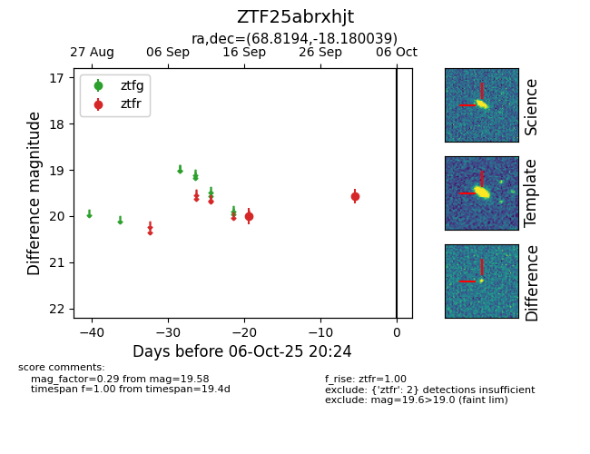

FINK: ZTF25abrxhjt
Lasair: ZTF25abrxhjt
ALeRCE: ZTF25abrxhjt
ZTF25abrxhjt (ztf,fink)
equatorial (ra, dec) = (68.8194,-18.18004)
galactic (l, b) = (215.4901,-37.99480)

last ztfr=19.58
2 ztfr detections